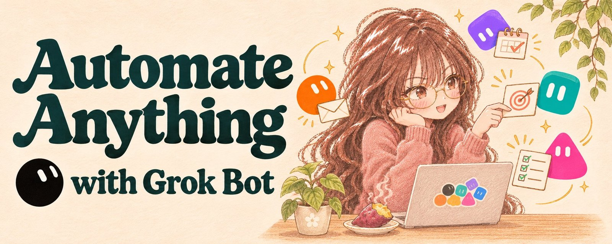
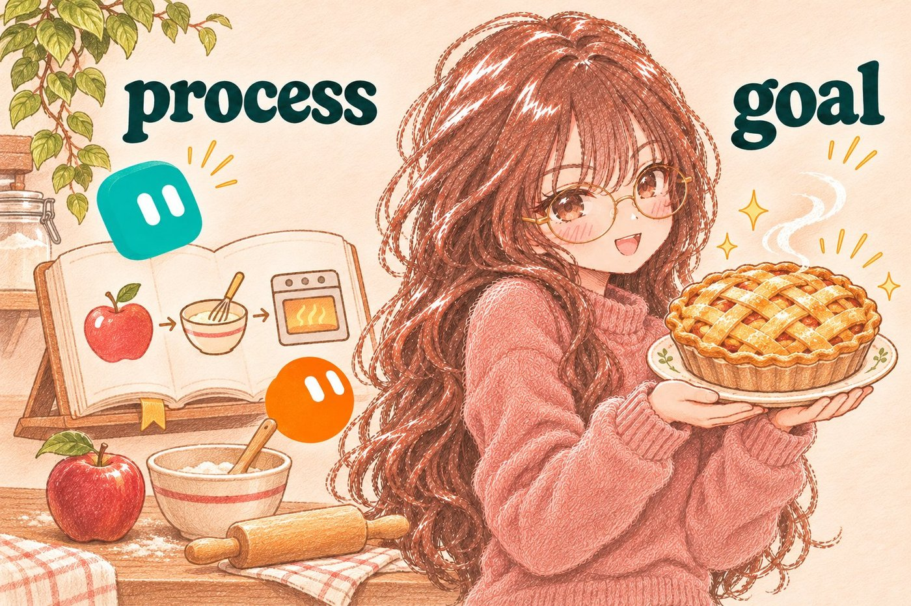

X Article · lauren（@poteto） · 2026-11-18
Automate Anything with Grok Bot用 Grok Bot 自动化任何事

60 秒速览：这篇文章在说什么
译者所加，不是原文的一部分 —— 读完这 6 条，再看原文会快很多。
- 一句话结论：自动化 = 一个目标 + 一套流程 + 一个替你跑流程的东西。Grok Bot 把第三项换成「用大白话指挥的机器人」，所以不会写代码也能开始。
- 真正难的地方不是工具，是想清楚：很多人一上来就描述步骤（填表、发邮件），却没问过这些步骤是为了什么。作者说，她经常看到这种把流程当目标的错误。
- 三步操作法：① 先定目标，用业务结果描述（增收还是降本）；② 口述流程，建议用语音听写、允许想到哪说到哪，然后让它用简单英文复述、你确认之后再动手；③ 把隐性判断、信息从哪来、怎么算做完、什么时候该来找你帮忙，一并讲清。
- 让它自己转：给它接上能拿到反馈的地方（邮件、社媒、Yelp/Google 点评），让它自己发现问题、提改进；再用例程（routine）设成「邮件到达」或「每周一次」，它就不用你催。
- 数据决定上限：业务越数字化、各处又有稳定的唯一 ID（客户 ID、订单号、邮箱），它越能把散落的信息拼起来，诊断也越准。
- 边界要说清：这是产品作者写给新用户的操作指南，不是第三方评测——全文没有一个效果数字，「机器人能做你在电脑上能做的任何事」是主张，不是测量。原文也没谈成本、权限和出错回滚。
原文说的「一两年前」：自动化只属于懂技术的人
- 要么懂怎么搭机器、怎么把它组装起来
- 要么会写代码——工程师过去得亲手写代码，把电脑能做的事自动化
- 机器是实打实的设备，比如面包房批量烤苹果派的烤箱
- 所以，自动化当时只对有技术背景的人开放
本文主张：用大白话指挥一个机器人
- 用自然语言说清目标，机器人自己写代码、用它自己的电脑
- 先口述你的做法，它复述确认之后再动手
- 把隐性判断、信息源、验收标准也讲给它
- 让它自己找反馈、提改进
- 用例程（routine）按邮件、消息或时间表自动跑
左栏只保留原文明确说过的（技术门槛、工程师手写代码、面包房烤箱）；右栏是原文主张的做法。两边都不是实测对比，原文没有给任何成功率或耗时数字。
读法建议：先看下面的对比卡，再按「目标 → 流程 → 反馈 → 例程」的顺序读。五个引用块是直接可以抄的提示词，读的时候可以跳过引号、只记结构。术语卡是给没用过这类机器人产品的读者补课的。
Automation can be surprisingly hard to get right, even for people who do it every day. I’d like to share how I approach it, at work and in my personal life, and how Grok Bot can help you take on more ambitious goals.1
自动化这件事，要做到位可能意外地难——就连每天都在做的人也一样。我想分享自己在工作中和生活中是怎么做这件事的，以及 Grok Bot 能怎样帮你接下更宏大的目标。1
A way of thinking一种思考方式
这一节只做一件事：把「目标」和「流程」分开。苹果派和换轮胎两个例子都在说同一句话——目标是终点，流程是到达终点的那串步骤。
Automation is really just a way of thinking that anyone can learn. It's about thinking systematically and logically, breaking things down into small steps while keeping a goal in mind.
说到底，自动化只是一种思考方式，任何人都学得会。它的要点是有条理、有逻辑地想问题：把一件事拆成小步骤，同时心里始终装着目标。
There are 2 parts to it: a goal, and a process.
它由两部分组成：一个目标，和一套流程。
An everyday example of this is baking an apple pie (the goal). You follow a recipe or process which has clearly laid out steps - buying and preparing the right ingredients, assembling the pie and decorating it, baking it, letting it cool, and so on. Or if you're replacing a flat tire (also a goal), you might need to find a way to jack the car up so you can reach the tire, find the tools to remove and replace it with a new one, and then put everything back together again.
一个日常例子是烤一个苹果派——这就是目标。你照着食谱，也就是一套流程，按写清楚的步骤走：买齐并处理好原料、把派组装起来并装饰、烘烤、放凉，等等。又比如换一只瘪掉的轮胎（这也是目标）：你可能得想办法把车顶起来才能够到轮胎，找出拆装轮胎的工具，把旧胎换成新胎，再把所有东西装回去。
Simply put, the goal is what you want at the end, and the process is how you get there.
简单说，目标是最后你想要的那个东西，流程是你怎么走到那里。

左边是过程，右边是目标 原文用这张插画把两个词并排放：左边 process，一本摊开的食谱，苹果 → 搅拌碗 → 烤箱；右边 goal，一只烤好的派。作者的意思很直白——食谱是流程，派才是目标。
这张图怎么看（4 条）
- 图上只有两个英文词：左侧 process，右侧 goal，其余全是图标。
- 书页上三个图标按箭头排：苹果（备料）→ 搅拌碗（混合）→ 烤箱（烘烤），这就是流程。
- 女孩手里端着的派，是流程跑完之后你想要的结果，也就是目标。
- 两侧那两只彩色小机器人是这套插画的固定角色，不代表具体功能；正文说的「自动化」，是在流程之外再加一台机器或一段代码。
一句话：自动化搬走的是左边的步骤，不是右边的结果——先认清你要的是派。
Automation is the same thing: a goal and a process, but with the addition of something like a machine, like the ones a bakery might use to bake lots of apple pies. Or code, what software engineers used to write by hand to automate stuff that could be done by a computer. It's about breaking things down into steps towards a goal, then automating the process so you don't have to personally do it every time.
自动化是同一回事：一个目标加一套流程，只不过多了一样东西——一台机器，比如面包房用来批量烤苹果派的那种。或者代码——软件工程师过去要亲手写代码，把电脑能做的事自动化。做法是把事情拆成通往目标的一个个步骤，然后把流程自动化，这样你就不必每次都亲手做。
Grok Bot is automation for everyoneGrok Bot 让每个人都能做自动化
作者的主张：过去自动化有技术门槛，现在只要会用大白话描述，机器人自己写代码、自己操作电脑。她还特意请非技术读者「暂时放下怀疑」。
Just a year or two ago, automation was limited to those with the technical know-how of how to build or put together machines or write code. With Grok Bot, automating anything that can be done with a computer is now in reach even for people who aren't technical or software engineers! And the really surprising thing is just how much computers can do, even on tasks that you might not think a bot is capable of doing.
就在一两年前，自动化还只属于那些懂技术的人：会搭机器、会组装，或者会写代码。有了 Grok Bot，凡是电脑能做的事，现在哪怕你不懂技术、不是软件工程师，也能把它自动化。真正让人意外的是电脑能做的事情之多——包括那些你可能觉得机器人做不了的任务。
You don’t need to know how to write code to start automating tasks with Grok Bot. You can describe what you want in plain English, then work with your bot to figure out the steps. Bots can write code for you, and use its own computer to do pretty much anything that you can do on your own computer or smartphone.2
用 Grok Bot 开始自动化，你不需要会写代码。你可以用大白话把想要的东西描述出来，再和你的机器人一起把步骤理出来。机器人能替你写代码，还能用它自己的电脑，做几乎任何你能在自己电脑或手机上做的事。2
If you're not technical, I want you to suspend your disbelief for a moment. Bots really can do anything that you can do on a computer. It can move its own mouse around and click on things, install or connect to apps and software that you use everyday, browse the internet on its own browser, join meetings and take notes for you, and so much more.
如果你不是技术出身，我想请你先暂时放下怀疑。机器人真的能做你在电脑上能做的任何事。它能自己移动鼠标、点击东西，安装或连接你日常用的应用和软件，用它自己的浏览器上网，替你参加会议并做笔记，还有更多。
And because so much of our work and life these days relies on technology, it means that more and more work can be done by a bot instead, freeing you up to focus on other things.
而如今我们的工作和生活有那么多都依赖技术，这意味着越来越多的工作可以改由机器人来做，把你解放出来去专注别的事。
Start with the goal从目标开始
最常见也最贵的错误，是把流程当目标。这一节给了判断方法（增收还是降本），以及两段可以直接抄的提示词：一段用来立目标，一段让机器人在你不确定时反过来采访你。
To make this concrete, let's build a new bot together that will automate something for you.3 Go to Grok Bot, then make a new bot and give it any name you like. If you're struggling to find a name, just call it Potato and ask it to name itself later.
为了让这件事具体起来，我们一起建一个新的机器人，让它替你自动化一件事。3打开 Grok Bot，新建一个机器人，随便起个你喜欢的名字。如果实在想不出名字，就先叫它 Potato，回头再让它自己起。
Before we start chatting with the bot: when I think about automation, I always start with thinking about the goal. What are we trying to do here?
在开始和机器人聊天之前：我做自动化时，总是先想目标。我们到底想做成什么？
One mistake I often see is that people confuse the process for the goal. For example, you may already have a well-defined process at work for the tasks that you do. But the goal is not to fill up a form, or to send an email. That's just a step in the process.
我经常看到的一个错误，是把流程当成了目标。比如，你在工作里做的那些任务，可能已经有一套定义得很清楚的流程。但目标不是填完一张表，也不是发出一封邮件。那只是流程里的一步。
Instead, think about the goal at the end: what is this process for, and where does it fit into the business? Does it help increase revenue (eg processing a sale, building new features), or does it reduce costs (eg ordering just the right amount of inventory)? If you're not sure, chat with your manager or colleagues, or even ask Bot to help you figure it out!
反过来，想想终点上的目标：这套流程是为了什么，它在业务里处在哪个位置？它是在帮你增收（比如处理一笔销售、开发新功能），还是在帮你降本（比如把库存订到刚好合适的量）？如果你不确定，就跟你的经理或同事聊聊，甚至可以让机器人帮你把它想清楚！
Clarifying what the goal is the best place to start because it focuses you and Grok Bot on the end result. You may actually find that bots can figure out how to make the process more efficient too, so it's important not to be too attached to a specific process, since it's a means to an end after all.
澄清目标究竟是什么，是最好的起点，因为它能把你和 Grok Bot 的注意力都集中到最终结果上。你也许会发现，机器人也能想出办法让流程更高效，所以不要把某套具体流程抓得太紧——它说到底只是达到目的的手段。
Once you're figured out the goal, start by describing it to the new bot, then ask it to pick a name for itself if you'd rather not call it Potato.
一旦你搞清了目标，就先把它描述给新机器人，然后——如果你不想一直叫它 Potato——让它给自己挑个名字。
"Hi Potato, this is the goal I want you to be responsible for: <goal>. Pick out a name and picture for yourself based on it."
「嗨 Potato，这是我想让你负责的目标：<goal>。根据这个目标，给自己挑一个名字和一张头像吧。」
Here are some starter goal ideas you can tell your bot:
下面是一些可以告诉机器人的入门目标，供你参考：
- Save money towards buying a new car, house, college fund for my kids
- Schedule new customer bookings for my small business
- Improve my customer experience for my small business so they leave me good reviews
- Hire new employee for my small business
- Gather feedback for my product so I can make improvements to it
- Prepare slides for a weekly meeting
- Build new features for my product
- 攒钱买新车、买房，或者给孩子存大学基金
- 为我的小生意安排新客户的预约
- 改善我的小生意的客户体验，让客户愿意给我好评
- 为我的小生意招一名新员工
- 收集我产品的反馈，好让我据此改进
- 为每周例会准备演示文稿
- 为我的产品开发新功能
If you're not quite sure how to describe your goal, ask Potato to help you! Tell it:
如果你不太确定该怎么描述目标，就让 Potato 帮你！对它说：
"Hi Potato, I'd like you to be responsible for a goal, but I'm not sure how to best describe it. Can you ask me some questions and interview me until we have a goal that I'm happy with?"
「嗨 Potato，我想让你负责一个目标，但我不太确定该怎么把它描述得最好。你能不能问我一些问题、像面试一样采访我，直到我们得到一个我满意的目标？」
The process流程
把流程口头倒出来，让它复述、你确认，再让它接应用。作者强调别指望第一遍就对；最后还给了一条「让机器人拿流程去对照目标」的进阶提示词。
Once you've told it your goal, think about how you would achieve this goal if you were doing it, then ask the bot to see where it can make things more efficient. If you'd rather it do a task exactly following your process, you can tell it that too.
把目标告诉它之后，先想想如果由你亲手做，你会怎么达成这个目标；然后再让机器人看看哪里能做得更高效。如果你更希望它严格照你的流程做，也可以直接告诉它。
The best way to give bot this information is to use voice dictation in Grok Bot and speak for a while, brain dump everything it needs to know to do the job, and don't worry about the stream of consciousness or organizing your thoughts first. Tell it:
把这些信息交给机器人最好的方式，是用 Grok Bot 的语音听写说上一会儿：把做这件事需要知道的一切一股脑倒出来，先别管说得乱不乱，也别急着把思路理清楚。对它说：
- The steps you usually take
- The things you watch out for and pay attention to
- The apps and tools you use to do it
- How you check that the work was done right
- Where you get the information you need to do it (eg email, Slack/Teams, a ticket, an app or website)
- Where you get feedback on how it went (eg customer feedback/review, feedback from colleagues)
- 你通常会走的步骤
- 你会留意、会特别注意的地方
- 你做这件事时用的应用和工具
- 你怎么检查这件事有没有做对
- 你从哪里拿到做这件事需要的信息（比如邮件、Slack/Teams、一张工单、某个应用或网站）
- 你从哪里得知做得怎么样（比如客户的反馈或评价、同事的反馈）
"Potato, this is how I usually do this goal myself: <process> I want you to think about how you can take this over completely from me. Before you begin, restate what you think my goal and process is in simple English so I can give you feedback and confirm it. I don't want you to start executing on this yet, let's focus on getting the process planned first."
「Potato，这个目标我通常是自己这样做的：<process>我想让你想一想，怎么把它从我手里完全接过去。在开始之前，先用简单的英文复述一遍你认为我的目标和流程是什么，这样我能给你反馈、跟你确认。我还不想让你现在就开始执行，我们先把流程规划好。
把脑子里的做法倒给机器人 女孩对着手机说话，上方气泡里是信封、日历、打勾清单；黄色箭头指向一块写字板，同样的三样被排成三行，两只方形机器人趴在板子边上。这是「口述流程」的示意图，不是产品界面。
这张图怎么看（4 条）
- 图上没有文字标签，只能靠图标认：气泡里依次是信封、日历、打勾的清单。
- 箭头把这三样从「想」挪到写字板上，意思是把脑内的流程写成它照着做的清单。
- 三行图标与气泡一一对应：信息从哪来、什么时候做、怎么算做完。
- 青、紫两只方形机器人是装饰角色，不代表任何真实界面。
一句话：流程要写成清单，不能只留在脑子里。
Don't worry about getting it right on the first pass. Review what the bot says and then correct it by giving it more information. Once you've done this a few times, you should have something you're happy with. You can then tell bot to proceed, and to start connecting to the apps and tools it needs to do the job correctly.
第一遍没做对，不用着急。看看机器人说的哪里不对，再补信息，把它的说法纠正过来。这样来回几次之后，你应该就能得到一个自己满意的版本。这时你就可以让它继续，并开始连接它把这件事做对所需要的应用和工具。
If you're feeling ambitious, you can even ask it to review the process against the goal and see if it can think of a better or more efficient way to do it.
如果你想更进一步，甚至可以让它拿流程去对照目标，看看能不能想出一个更好、更高效的做法。
"Review our process against my original goal, and if you see a way to make it better or more efficient, let me know."
「把我们的流程跟我最初的目标对照一下；如果你看到能做得更好或更高效的办法，告诉我。」
Teach your bot how you think教会机器人「你怎么想」
真正难讲的是那些你「没想就做了」的判断。这一节给了三个抓手：信息从哪来、冲突时信谁、什么算做完；再让机器人主动追问你漏掉的部分。
One thing that's easy to forget when explaining a process is how much you do without really thinking about it. If you're booking customers, you probably know which services take longer, who can do each job, and when to leave extra time between appointments. These decisions might feel obvious to you, but your bot needs that context too. Think about what you're paying attention to when you do the task yourself, and what makes you do something differently.
讲流程时，有一件事很容易被忘掉：你有多少动作是根本没细想就做完了的。比如你在给客户做预约，你大概知道哪些服务更费时间、谁能做哪一项、什么时候该在两个预约之间多留点余量。这些判断对你来说可能理所当然，但你的机器人也需要这些背景。想想你亲手做这件事时在留意什么，以及是什么让你换一种做法。
Tell it where you get that information and how you check that the work is done right. For example, if an email and your booking system show different appointment times, which should it trust? A booking also isn't finished just because an email was sent. The appointment needs to be saved correctly and the customer needs a confirmation. If you're still waiting for details, have the bot keep track of that so it can pick things back up later without accidentally creating another booking.
告诉它你从哪里拿到这些信息，以及你怎么确认事情做对了。比如，一封邮件和你的预约系统显示的预约时间对不上，它该信哪个？另外，仅仅因为一封邮件发出去了，并不等于预约就完成了。预约要正确地存进系统，客户也要收到确认。如果有些细节你还在等，就让机器人记下这些还没到齐的细节，好让它之后能接着处理，而不会一不小心又建一个重复的预约。
Don't worry about explaining every possible situation upfront. Start with a few real examples, including ones where something went wrong or you had to do something differently. Ask the bot how it would handle them, then give it feedback. You can also ask it to help you figure out what you've forgotten to explain!
不用一开始就把所有可能的情况都讲完。先从几个真实例子开始，包括出过岔子的、或者你不得不换个做法的那几次。问问机器人它会怎么处理这些情况，然后给它反馈。你也可以让它帮你想想，你还有哪些地方忘了讲！
“Potato, help me figure out what I haven't told you about this process yet. Ask me questions about how I make decisions, where I get my information, how I check the work, and when you should ask me for help. Ask one question at a time, then walk me through a few examples so I can give you feedback before we automate this.”
「Potato，帮我理一理，关于这套流程，我还有哪些没告诉你。问我：我是怎么做决定的、我从哪里拿信息、我怎么检查工作，以及什么时候你该来问我。一次问一个问题，然后带我走几个例子，好在自动化之前让我给你反馈。」
Let your bots improve themselves让机器人自己改进自己
想让机器人越跑越好，就把它接到反馈来源上：邮件、社媒、点评网站。业务越数字化、唯一 ID 越统一，它越能把线索拼起来。
Once your bot is performing the workflow, it's important to give it feedback so it can improve. The best way to do it is to equip your bot with the apps and tools it needs to get that feedback for itself. The way I approach this is to think about what I would do if it was me doing the task and I wanted to self improve.
机器人开始跑这个工作流之后，给它反馈很重要，它靠这个才能改进。最好的做法，是给它配上能自己拿到反馈的那些应用和工具。我的思路是：如果这件事是我自己在做、而且我想自我改进，我会去做什么。
For example, if your bot is managing new customer bookings for you, a way to let it improve itself is by letting it monitor your emails, social media, or Google/Yelp reviews for customer feedback. It can look out for that feedback and then take the initiative to propose improvements to your process.
比如，如果你的机器人在替你管理新客户预约，让它自我改进的一种方式，是让它去盯你的邮件、社交媒体，或者 Google/Yelp 上的评论，找客户反馈。它能留意这些反馈，然后主动提出对流程的改进建议。
Maybe a customer says on Yelp that they had to wait very long before someone could attend to them. If your bot can look up this information on Yelp for itself, and also look up any records you have for the customer that day, it could see what might have gone wrong.
也许有客户在 Yelp 上说，自己等了很久才有人来接待。如果机器人能自己去 Yelp 查这条信息，再查你那天关于这位客户的记录，它就可能看出哪里出了问题。
让机器人自己看反馈、自己排时间 日历上排着彩色时间块，旁边一只闹钟；放大镜底下是一段带引号的反馈和一只时钟，下方卡片上三个时钟用虚线连起来。对应「让机器人自己改进自己」与「让机器人自动干活」两节：用时间戳诊断「客户等了多久」，以及按时间表跑。
这张图怎么看（4 条）
- 日历上的彩色条是排期，对应例程（routine）：每周一次、隔天一次这类固定节奏。
- 放大镜压在引号和时钟上，对应让机器人去 Yelp、社媒、邮件里找客户反馈。
- 下方卡片三个时钟用虚线相连，对应车行例子里那条时间线：到店 → 见到接待 → 交钥匙 → 完工（原文列了四个时间点，图里画了三个）。
- 闹钟和日历都是通用图标，图上没有产品界面文字。
一句话：反馈与时间戳是两路数据，接上它们，机器人才能自己发现问题。
In that sense, the more computerized your business is, the better for bots and automation. The availability of that data is what gives your bot the ability to come up with better improvements. And the best part is that Grok Bot can build tools for you to get this data! For example, if you're operating a car repair service, you could ask bot to build you an app that you can use on your computer and phone to log details about a customer visit.
从这个意义上说，你的生意越数字化，对机器人和自动化就越有利。机器人能不能提出更好的改进，取决于这些数据拿不拿得到。最棒的是，Grok Bot 还能为你做工具，来收集这些数据！比如你经营一家修车行，可以让它给你做一个应用，你在电脑和手机上都能用，用来记录客户到店的细节。
If you log the time of:
如果你记下这几个时间：
- when they got to your shop
- when they were able to speak to a service rep
- when you took possession of their keys
- when service started and finished
- 他们到店的时间
- 他们能跟服务顾问说上话的时间
- 你拿到他们车钥匙的时间
- 服务开始和结束的时间
You could work out how long they spent waiting and better diagnose why. This is just a simple example, but the key lesson here is that the more data you have available to Grok Bot, the better it can help you and your business and work.
你就能算出他们等了多久，也更容易诊断出为什么等。这只是一个简单的例子，但关键的教训是：你能给 Grok Bot 的数据越多，它就越能帮到你、帮到你的生意和工作。
Bots can also cross reference data across multiple sources if you have something like an ID - some kind of number or unique text like an email address that gives that data an identity. This could be a customer ID or email address, an order number, a part number, a barcode, an employee ID, and so on. If you use multiple apps and services, having unique and consistent IDs across all these tools will help you bring that data together so bot can fully understand what's going on.
如果每份数据都有一个 ID（唯一标识符——某种编号，或者像邮箱这样唯一的文字），机器人还能跨多个来源把数据对起来，那个 ID 就是数据的身份。它可以是客户 ID、邮箱地址、订单号、零件号、条码、员工工号，等等。如果你用好几个应用和服务，让这些工具里的 ID 唯一且一致，就能帮你把数据汇总到一起，好让机器人完全弄清发生了什么。
Making bots do work automatically让机器人自动干活
没有例程，机器人只在你叫它时才动。例程把「什么时候开工」定下来：邮件到达、收到消息，或固定时间表。
The next thing is, when should the bot do the work? Should it start when an email arrives, when someone sends a message, or on a regular schedule? In Grok Bot, you set this up with routines.
接下来要问的是：机器人该在什么时候干活？是邮件一到就开始，还是有人发来消息时开始，或者按固定时间表来？在 Grok Bot 里，这件事是用例程来设置的。
Without a routine, bots will only do the work when you ask them to. This is fine when you're first starting out with using bot, but if you want to streamline things, you'll want to figure out how to get the bot to do it automatically, so you're no longer the bottleneck.
没有例程，机器人只会在你叫它的时候才干活。刚开始用机器人的时候这没问题；但如果你想把事情理顺，就得想办法让它自动去做，这样你就不再是那个瓶颈。
Usually, the work happens with some kind of trigger like an email or Slack/Teams message. Or maybe it happens on a regular schedule, like once a week or every other day. Either way, if you ask your bot to set it up, it will!
通常，这些活儿是由某个触发器启动的，比如收到一封邮件或一条 Slack/Teams 消息。也可能按固定节奏发生，比如每周一次，或者隔天一次。不管是哪种，只要你让机器人去设，它就会设好！
Install Dr Eggbot安装 Dr Eggbot
作者把自己会的一切教给了一个叫 Dr Eggbot 的机器人，用来替别人设计机器人。
I taught everything I know about automating work to Dr Eggbot, so if you want to start automating your work more, install it and ask it to help you!4 Dr Eggbot is a bot designer - it will create high quality bots for you.
我把自己知道的关于工作自动化的一切都教给了 Dr Eggbot；如果你想更多地自动化自己的工作，就装上它，让它来帮你！4Dr Eggbot 是一个机器人设计者——它会为你做出高质量的机器人。
Thanks for reading!
谢谢阅读！
补充材料
下面几块都是译者所加，用来补上原文没展开的部分。正文里的虚线链接、虚线术语、上标数字，都能悬停看卡片；这里给出完整的清单，方便你事后再回头查。
延伸阅读地图
原文 1 处正文引用，指向 1 个不同链接；另有 3 张配图未计入。按「不读会不会误解本文」分成三档：必读 / 背景 / 可选，建议顺序即卡片上标注的数字。每条都写了「不点开也能拿到的重点」，所以你可以完全不跳转地读完这篇文章。
Dr Eggbot v2（lauren 制作）
x.ai · dr eggbot v2 by lauren
正文对应：Dr Eggbot
这是什么：Grok Bot 上的一个机器人：你把自己的工作讲给它，它先采访你、问清目标与流程，再给你造一个能自己跑的机器人。
为什么值得点：本文的「三步操作法」是作者手把手演示；这个机器人把同一套流程固化成了一个可以对话的对象，想直接试的人从这里进。
访问说明：x.ai 在部分网络环境需代理；本页按实测状态记为可访问。
不点开也能拿到的重点
页面自述：Designs tight, single-job Grok Bots——只做一件事的机器人；流程是先采访你（goal 与 process），再生成一个机器人自己跑。页面同时声明：它由第三方用户创建，不是 SpaceXSI 出品，使用即代表你接受它会代替你行动。打开页面需要能访问 x.ai 的网络（部分网络环境需代理）。
- 它先问清「目标」和「流程」，再动手造机器人，和正文的顺序一致
- 定位是「只做一件事的机器人」，不追求一个机器人包打天下
- 第三方机器人，不是官方出品；会代表你执行操作
- 打开页面需要能访问 x.ai 的网络
术语表
正文里带虚线底线的词，悬停即出解释；这里是完整 13 条，可当速查用。
把「目标 + 流程」交给机器或代码重复执行，人不必每次亲手做。
像面包房的烤箱替你烤派。
你最终想要的结果：多赚钱、少花钱、客户给好评，而不是中间某个动作。
从起点到目标的那串步骤：备料、组装、烘烤；填表、发邮件只是其中一步。
食谱就是一张流程。
一串会被反复执行的流程；本文指机器人接手的那件完整的活。
本文指能自己开浏览器、动鼠标、装应用的软件代理，不是仓库里的机械臂。
文中使用的产品名：用自然语言指挥、带自己一台电脑的机器人平台。
不用术语和代码，像跟同事说话一样描述你要什么。
对着 Grok Bot 说话、由它转成文字；作者建议用它一口气倒完流程。
不整理、不排序，先把知道的全部说出来，再让它帮你理。
Grok Bot 里「什么时候自动开工」的设置：邮件到达、收到消息，或固定时间表。
让流程自动开始的那个事件：一封邮件、一条消息、一个时间点。
事情做完之后的评价与结果：客户点评、同事意见、等待时长，机器人用它改进。
跨系统认出同一个人或同一张单的编号，如客户 ID、订单号、邮箱。
没有它，多处数据拼不起来。
译者注
正文中上标数字对应这里，解释的是「直译会看不懂」或「原文本身含糊」的地方。
这是一篇产品作者的操作指南，不是评测
作者 lauren（@poteto）的简介写着自己「grok @bot at @SpaceXSI」，此前在 React Compiler、Cursor、Meta、Netflix。也就是说，她是在写自己参与的产品 Grok Bot 怎么用。这不是缺点，但决定了读法：文中「bots really can do anything that you can do on a computer」是产品主张，全文没有成本、成功率、可靠性数字，也没有失败案例。把它当成「作者希望你这样用」，别当成「第三方实测证明它能做到」。
原文用 it / its 指机器人
英文里对工具惯用 it，比如「use its own computer」「it can move its own mouse」。中文统一译作「它」，不暗示拟人化，也不暗示性别。文中的 Potato 只是作者建议的临时名字，不是产品功能。
「Start with the goal」在原文里不是标题
同一篇文章里其他小节都是 H2 样式，只有这一节是加粗的普通段落——多半是作者编辑时漏套了样式。本页按小节标题处理，只影响目录与层级，一个字都没改。
文末那条链接卡是什么
原文结尾有一条链接卡（不是正文句子），指向 x.ai/bot/rJW52lmFLtCvy2tSHcIag。实测：页面标题「dr eggbot v2 by lauren」，功能是「采访你、问清目标与流程，然后造一个自己跑的机器人」；页面自己标明它由第三方用户创建、不是 SpaceXSI 出品。本页把它作为外链卡 L1，锚在正文的 Dr Eggbot 上。
原文笔误与图文问题
原文有 5 处笔误或图文问题，中文按语义翻译、英文照录原文，并在此备案，方便对照核查。不在正文里改动原文。
Clarifying what the goal is the best place to start缺一个系动词：应为「Clarifying what the goal is is the best place to start」（澄清目标是什么，是最好的起点）。照录不静默改。
Once you're figured out the goal时态与助动词错位：应为「Once you've figured out the goal」。照录不静默改。
Bots can write code for you, and use its own computer主语 Bots 是复数，后面却用 its；紧接着的下一段也用 it。原文单复数混用，照录。
Hire new employee for my small business缺冠词：应为「Hire a new employee for my small business」。照录。
apps and software that you use everydayeveryday 是形容词，这里作副词应为 every day（两个词）。照录不静默改。